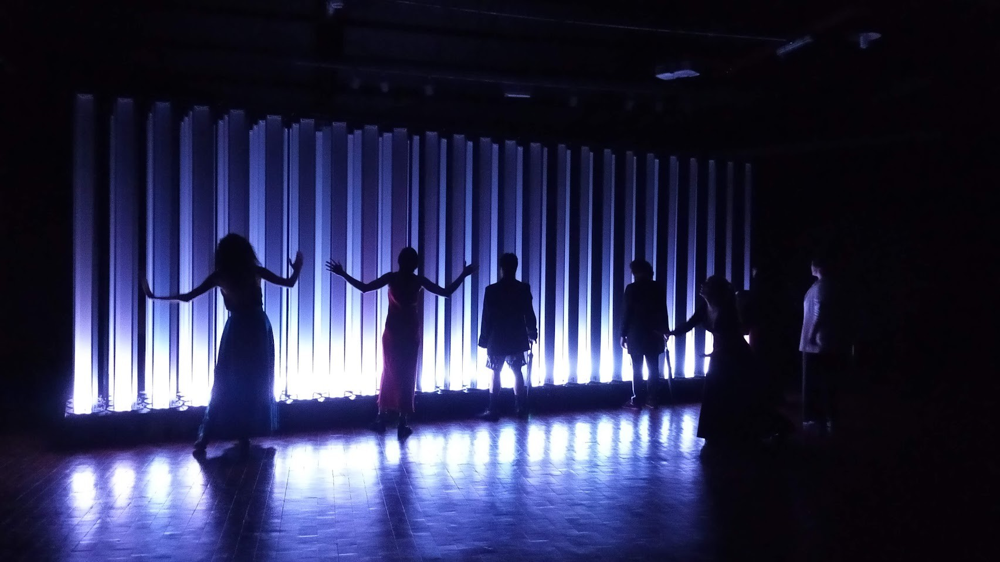
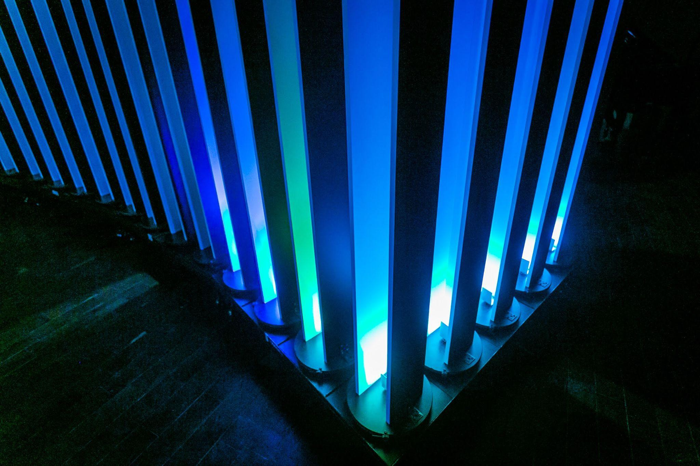
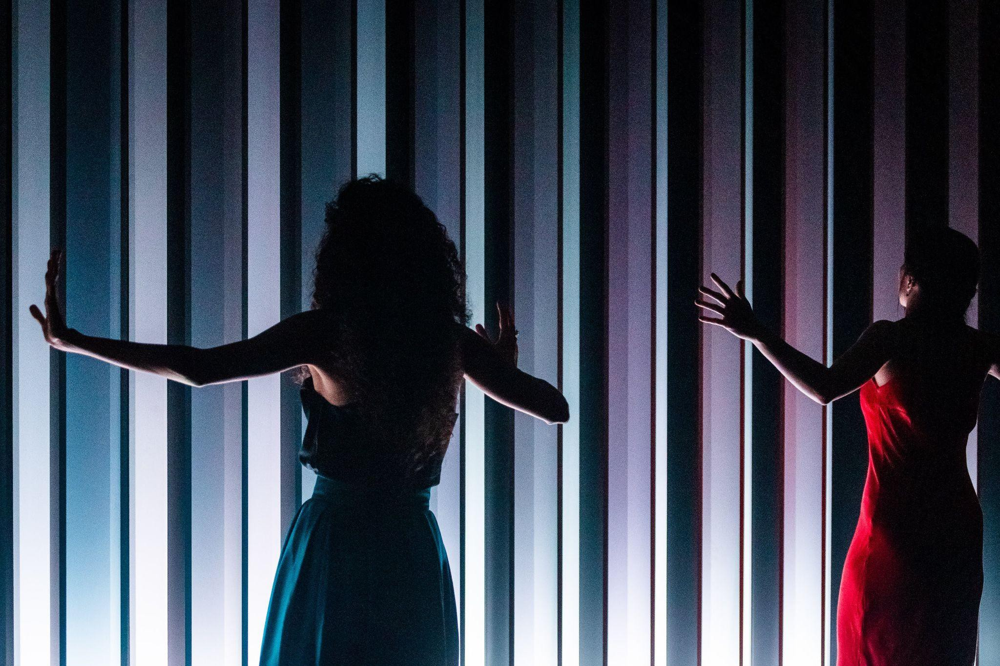
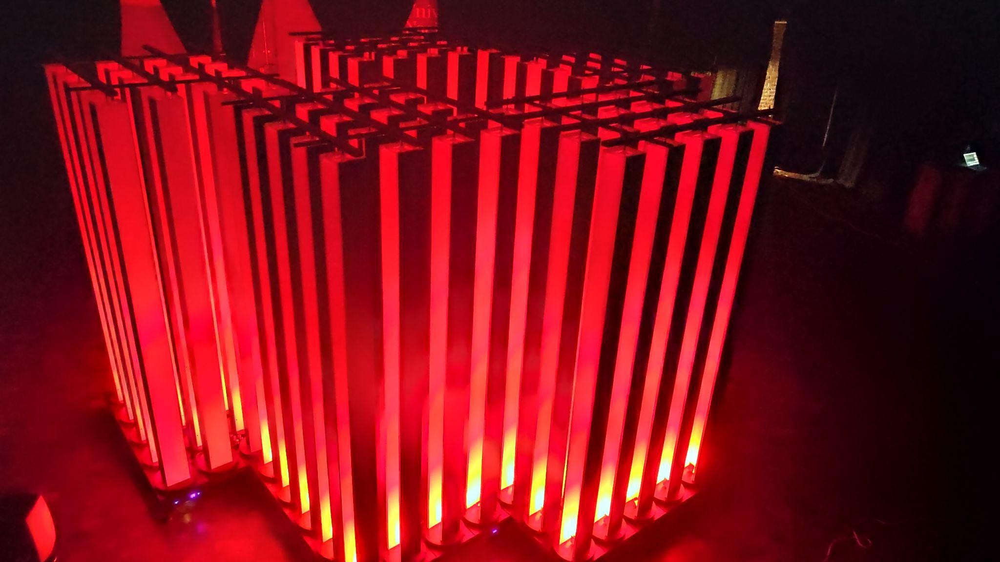

01 / 2019–2024 / Acoustic installation · Performance environment
Sonic Crystal Room
A room that becomes an instrument
Manuel Eguía / Oscar Edelstein

An architecture of mobile modules and rotating wooden columns transforms sound through physical acoustics. The room itself becomes a musical instrument.
In Sonic Crystal Room, we use the acoustic behaviour of a space as a material for composition and performance. The columns form a sonic crystal: a repeated structure that changes how sound travels. Reconfiguring the structure changes what a listener hears and where the sound seems to be.
The work makes architecture an active part of a performance. Movement, apparent distance and shifts in acoustic perspective emerge from the relationship between sound sources, the columns and the listener.
Composing with the space itself
We use mobile modules and rotating columns to change the room’s acoustic properties during a performance. Focusing, redirection and scattering become compositional resources, alongside the sound produced by musicians or loudspeakers.
Outside performances, the installation can be explored as a three-dimensional score. Visitors move through an architecture whose geometry and material properties organize the listening experience.


